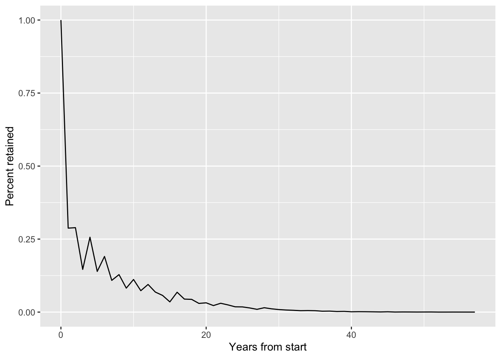
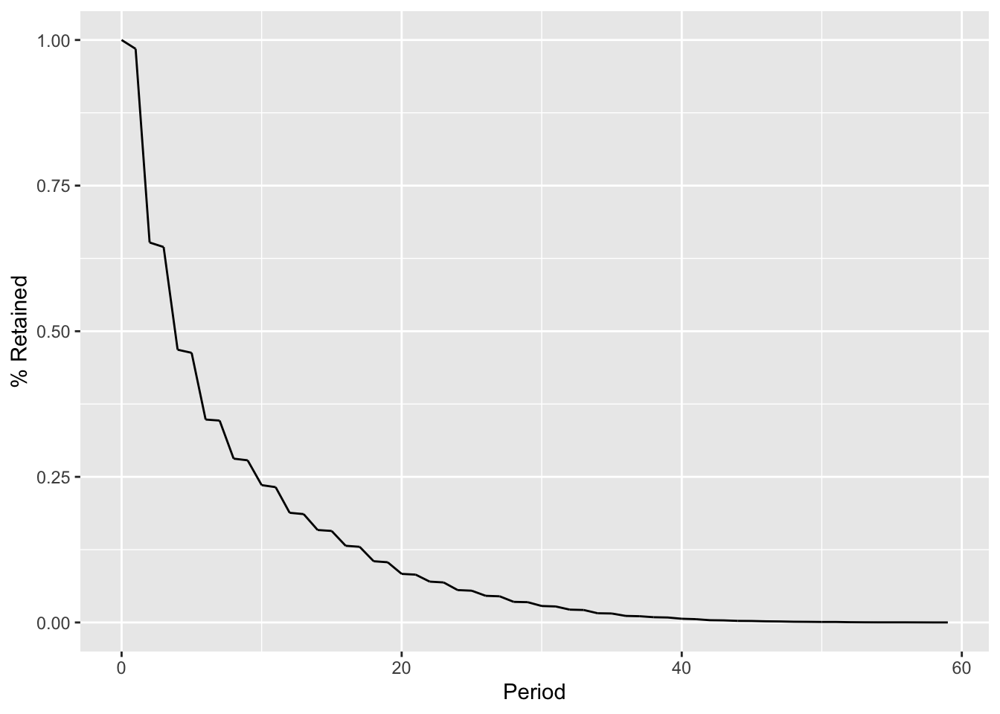
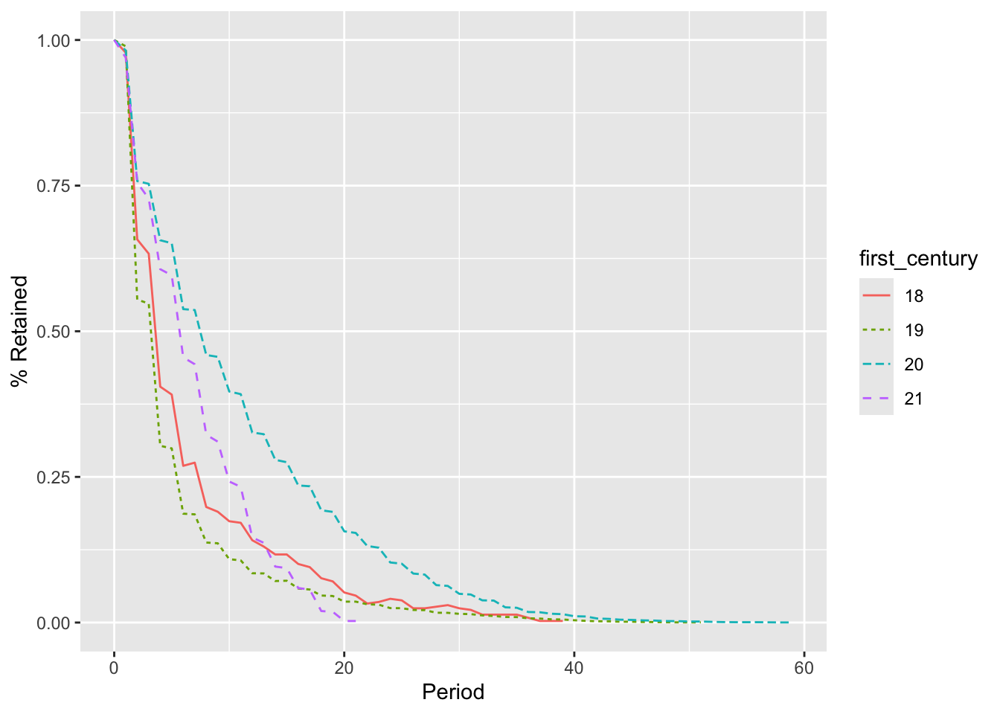
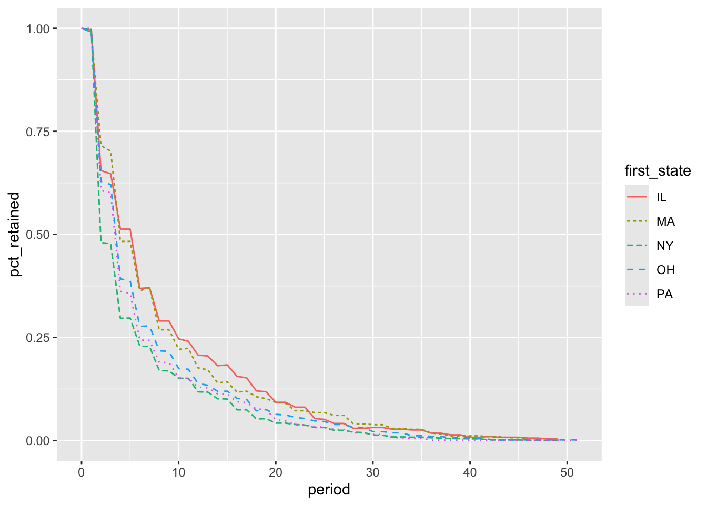
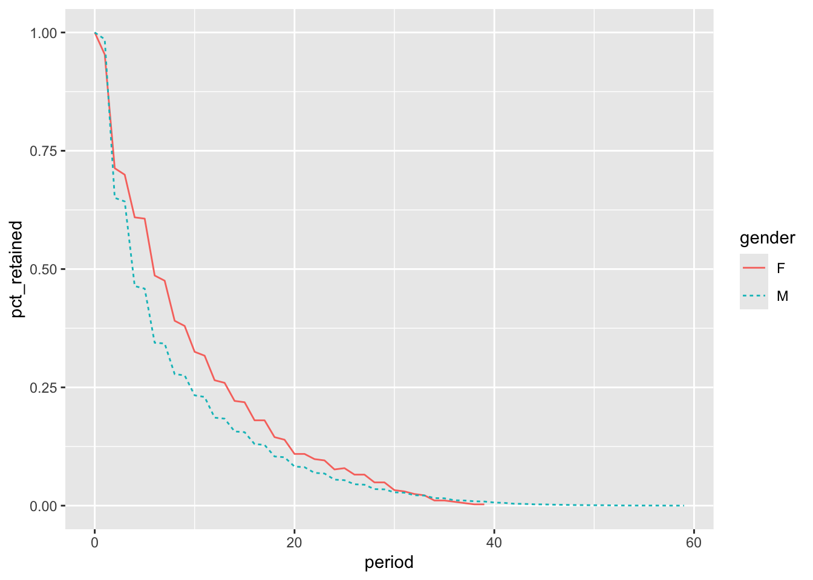
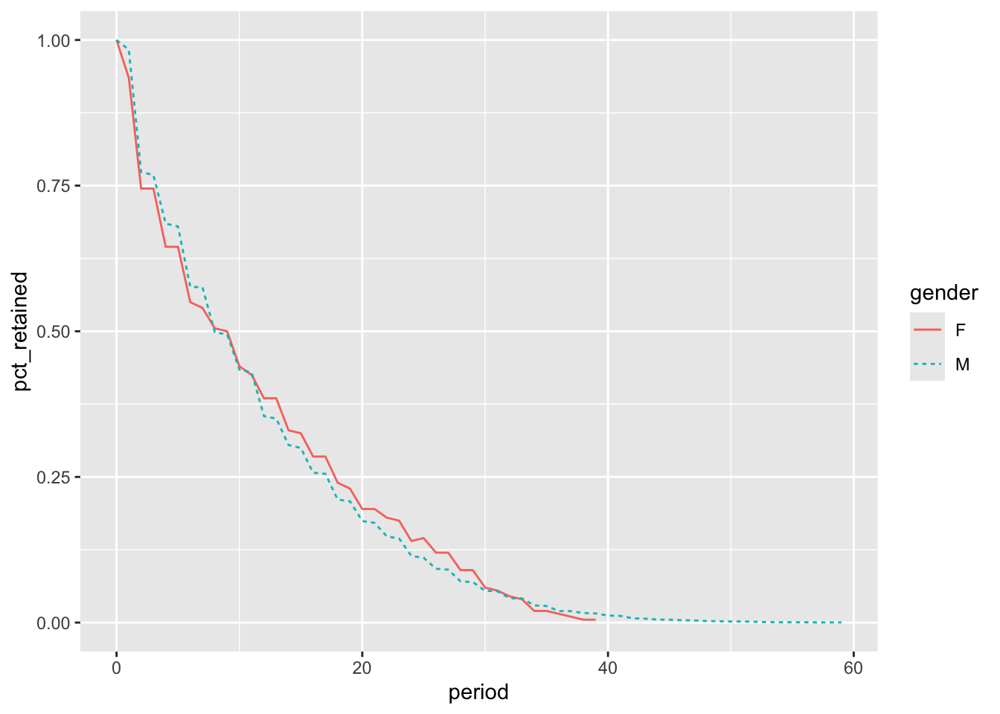
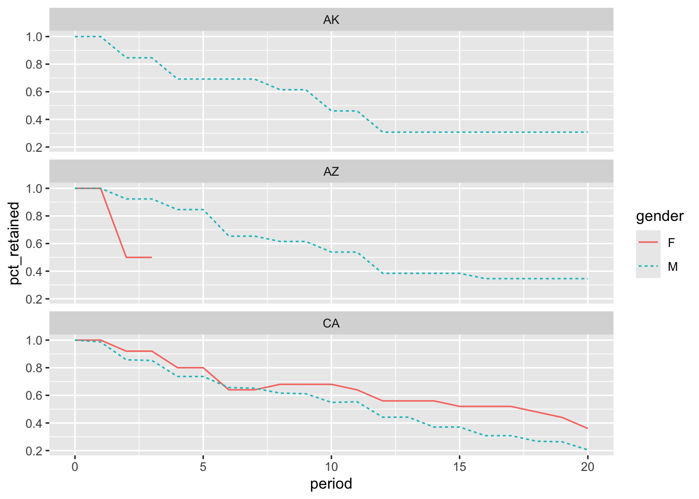
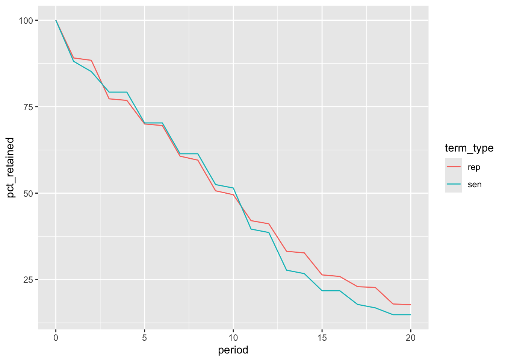
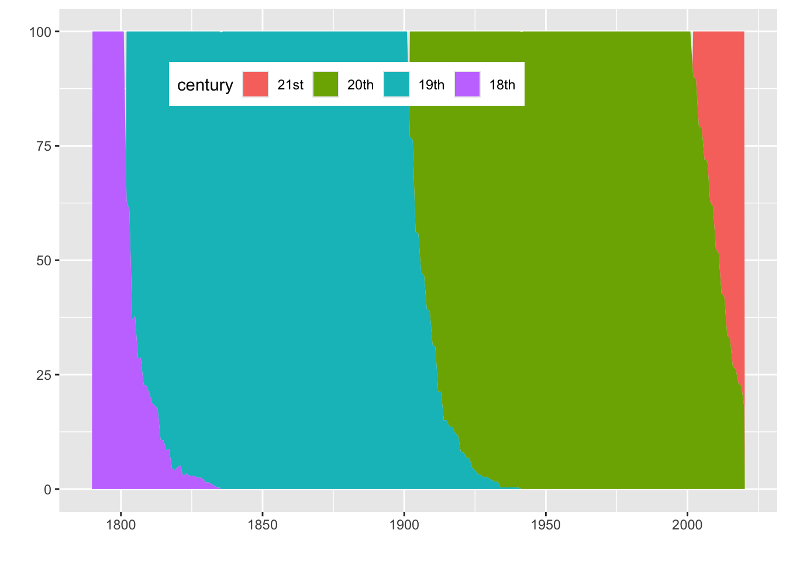
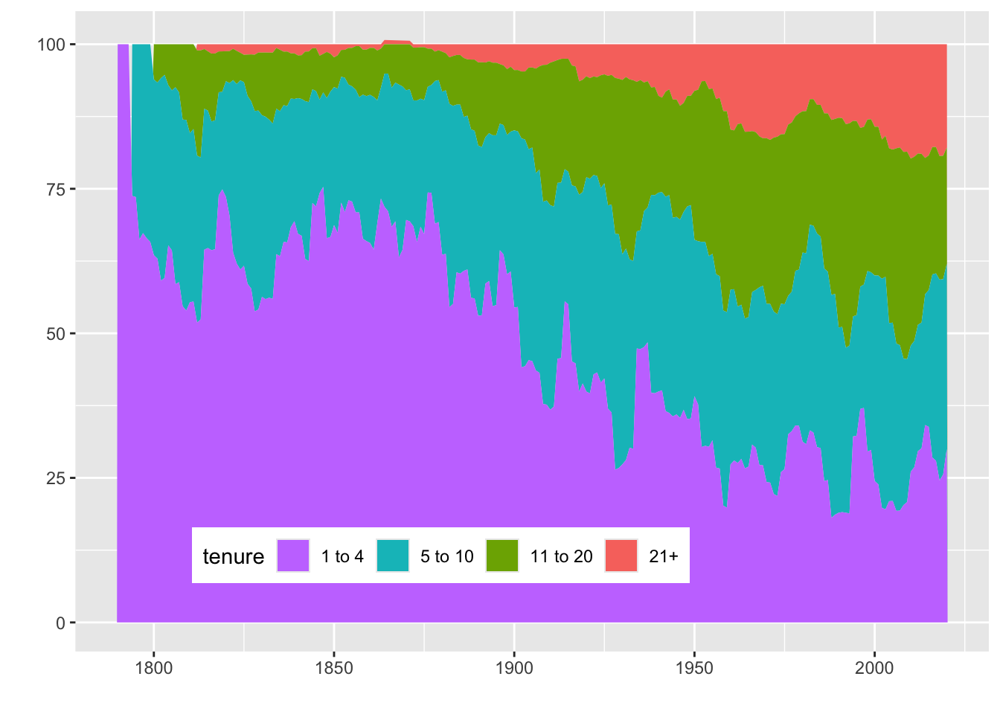

library(DBI)
library(tidyverse)
library(dbplyr)
library(ggplot2)
library(knitr)4 Cohort using dbplyr
dbplyr Version
This version of the chapter builds on Chapter 3 by converting SQL queries to dbplyr code. In Chapter 2 and Chapter 3, I suppressed some of the details of the code, such as the loading of R packages and creation of the two tables—legislators and legislators_terms—in the DuckDB database used to crunch the numbers. I also omitted the R code used to produce the plots in those chapters. I include those details here so that the code can be run by readers to produce the results observed here.
4.1 Cohorts: A Useful Analysis Framework
Before we get into the code, I will define what cohorts are, consider the types of questions we can answer with this type of analysis, and describe the components of any cohort analysis.
A cohort is a group of individuals who share some characteristic of interest, described below, at the time we start observing them. Cohort members are often people but can be any type of entity we want to study: companies, products, or physical world phenomena. Individuals in a cohort may be aware of their membership, just as children in a first-grade class are aware they are part of a peer group of first graders, or participants in a drug trial are aware they are part of a group receiving a treatment. At other times, entities are grouped into cohorts virtually, as when a software company groups all customers acquired in a certain year to study how long they remain customers. It’s always important to consider the ethical implications of cohorting entities without their awareness, if any different treatment is to be applied to them.
Cohort analysis is a useful way to compare groups of entities over time. Many important behaviors take weeks, months, or years to occur or evolve, and cohort analysis is a way to understand these changes. Cohort analysis provides a framework for detecting correlations between cohort characteristics and these long-term trends, which can lead to hypotheses about the causal drivers. For example, customers acquired through a marketing campaign may have different long-term purchase patterns than those who were persuaded by a friend to try a company’s products. Cohort analysis can be used to monitor new cohorts of users or customers and assess how they compare to previous cohorts. Such monitoring can provide an early alert signal that something has gone wrong (or right) for new customers. Cohort analysis is also used to mine historical data. A/B tests, discussed in Chapter 7, are the gold standard for determining causality, but we can’t go back in time and run every test for every question about the past in which we are interested. We should of course be cautious about attaching causal meaning to cohort analysis and instead use cohort analysis as a way to understand customers and generate hypotheses that can be tested rigorously in the future.
Cohort analyses have three components: the cohort grouping, a time series of data over which the cohort is observed, and an aggregate metric that measures an action done by cohort members.
Cohort grouping is often based on a start date: the customer’s first purchase or subscription date, the date a student started school, and so on. However, cohorts can also be formed around other characteristics that are either innate or changing over time. Innate qualities include birth year and country of origin, or the year a company was founded. Characteristics that can change over time include city of residence and marital status. When these are used, we need to be careful to cohort only on the value on the starting date, or else entities can jump between cohort groups.
Cohort or Segment?
These two terms are often used in similar ways, or even interchangeably, but it’s worth drawing a distinction between them for the sake of clarity. A cohort is a group of users (or other entities) who have a common starting date and are followed over time. A segment is a grouping of users who share a common characteristic or set of characteristics at a point in time, regardless of their starting date. Similar to cohorts, segments can be based on innate factors such as age or on behavioral characteristics. A segment of users that signs up in the same month can be put into a cohort and followed over time. Or different groupings of users can be explored with cohort analysis so that you can see which ones have the most valuable characteristics. The analyses we’ll cover in this chapter, such as retention, can help put concrete data behind marketing segments.
The second component of any cohort analysis is the time series. This is a series of purchases, logins, interactions, or other actions that are taken by the customers or entities to be cohorted. It’s important that the time series covers the entire life span of the entities, or there will be survivorship bias in early cohorts. Survivorship bias occurs when only customers who have stayed are in the data set; churned customers are excluded because they are no longer around, so the rest of the customers appear to be of higher quality or fit in comparison to newer cohorts (see “Survivorship Bias”). It’s also important to have a time series that is long enough for the entities to complete the action of interest. For example, if customers tend to purchase once a month, a time series of several months is needed. If, on the other hand, purchases happen only once a year, a time series of several years would be preferable. Inevitably, more recently acquired customers will not have had as long to complete actions as those customers who were acquired further in the past. In order to normalize, cohort analysis usually measures the number of periods that have elapsed from a starting date, rather than calendar months. In this way, cohorts can be compared in period 1, period 2, and so on to see how they evolve over time, regardless of which month the action actually occurred. The intervals may be days, weeks, months, or years.
The aggregate metric should be related to the actions that matter to the health of the organization, such as customers continuing to use or purchase the product. Metric values are aggregated across the cohort, usually with sum, count, or average, though any relevant aggregation works. The result is a time series that can then be used to understand changes in behavior over time.
In this chapter, I’ll cover four types of cohort analysis: retention, survivorship, returnship or repeat purchase behavior, and cumulative behavior.
- Retention
- Retention is concerned with whether the cohort member has a record in the time series on a particular date, expressed as a number of periods from the starting date. This is useful in any kind of organization in which repeated actions are expected, from playing an online game to using a product or renewing a subscription, and it helps to answer questions about how sticky or engaging a product is and how many entities can be expected to appear on future dates.
- Survivorship
- Survivorship is concerned with how many entities remained in the data set for a certain length of time or longer, regardless of the number or frequency of actions up to that time. Survivorship is useful for answering questions about the proportion of the population that can be expected to remain—either in a positive sense by not churning or passing away, or in a negative sense by not graduating or fulfilling some requirement.
- Returnship
- Returnship or repeat purchase behavior is concerned with whether an action has happened more than some minimum threshold of times—often simply more than once—during a fixed window of time. This type of analysis is useful in situations in which the behavior is intermittent and unpredictable, such as in retail, where it characterizes the share of repeat purchasers in each cohort within a fixed time window.
- Cumulative
- Cumulative calculations are concerned with the total number or amounts measured at one or more fixed time windows, regardless of when they happened during that window. Cumulative calculations are often used in calculations of customer lifetime value (LTV or CLTV).
The four types of cohort analysis allow us to compare subgroups and understand how they differ over time in order to make better product, marketing, and financial decisions. The calculations for the different types are similar, so we will set the stage with retention, and then I’ll show how to modify retention code to calculate the other types. Before we dive into constructing our cohort analysis, let’s take a look at the data set we’ll be using for the examples in this chapter.
4.2 The Legislators Data Set
db <- dbConnect(duckdb::duckdb())
Loading parquet files
load_parquet <- function (conn, table, data_dir = "data") {
file_path <- file.path(data_dir, paste0(table, ".parquet"))
df_sql <- paste0("SELECT * FROM read_parquet('", file_path, "')")
dplyr::tbl(conn, dplyr::sql(df_sql))
}legislators_terms <- load_parquet(db, "legislators_terms")
legislators <- load_parquet(db, "legislators")The SQL examples in this chapter will use a data set of past and present members of the United States Congress maintained in a GitHub repository. In the US, Congress is responsible for writing laws or legislation, so its members are also known as legislators. Since the data set is a JSON file, I have applied some transformations to produce a more suitable data model for analysis, and I have posted data in a format suitable for following along with the examples in the book’s GitHub legislators folder.
The source repository has an excellent data dictionary, so I won’t repeat all the details here. I will provide a few details, however, that should help those who aren’t familiar with the US government to follow along with the analyses in this chapter.
Congress has two chambers, the Senate (“sen” in the data set) and the House of Representatives (“rep”). Each state has two senators, and they are elected for six-year terms. Representatives are allocated to states based on population; each representative has a district that they alone represent. Representatives are elected for two-year terms. Actual terms in either chamber can be shorter in the event that the legislator dies or is elected or appointed to a higher office. Legislators accumulate power and influence via leadership positions the longer they are in office, and thus standing for re-election is common. Finally, a legislator may belong to a political party, or they may be an “independent”. In the modern era, the vast majority of legislators are Democrats or Republicans, and the rivalry between the two parties is well known. Legislators occasionally change parties while in office.
For the analyses, we’ll make use of two tables: legislators and legislators_terms. The legislators table contains a list of all the people included in the data set, with birthday, gender, and a set of ID fields that can be used to look up the person in other data sets. The legislators_terms table contains a record for each term in office for each legislator, with start and end date, and other attributes such as chamber and id_bioguide field is used as the unique identifier of a legislator and appears in each table. Table 4.1 shows a sample of the legislators data. Table 4.2 shows a sample of the legislators_terms data.
legislators table
| full_name | first_name | last_name | birthday | gender | id_bioguide | id_govtrack |
|---|---|---|---|---|---|---|
| Sherrod Brown | Sherrod | Brown | 1952-11-09 | M | B000944 | 400050 |
| Maria Cantwell | Maria | Cantwell | 1958-10-13 | F | C000127 | 300018 |
| Benjamin L. Cardin | Benjamin | Cardin | 1943-10-05 | M | C000141 | 400064 |
| Thomas R. Carper | Thomas | Carper | 1947-01-23 | M | C000174 | 300019 |
| Robert P. Casey, Jr. | Robert | Casey | 1960-04-13 | M | C001070 | 412246 |
| Dianne Feinstein | Dianne | Feinstein | 1933-06-22 | F | F000062 | 300043 |
| Russ Fulcher | Russ | Fulcher | 1973-07-19 | M | F000469 | 412773 |
| Amy Klobuchar | Amy | Klobuchar | 1960-05-25 | F | K000367 | 412242 |
| Robert Menendez | Robert | Menendez | 1954-01-01 | M | M000639 | 400272 |
| Bernard Sanders | Bernard | Sanders | 1941-09-08 | M | S000033 | 400357 |
| Debbie Stabenow | Debbie | Stabenow | 1950-04-29 | F | S000770 | 300093 |
| Jon Tester | Jon | Tester | 1956-08-21 | M | T000464 | 412244 |
| Sheldon Whitehouse | Sheldon | Whitehouse | 1955-10-20 | M | W000802 | 412247 |
| Nanette Diaz Barragán | Nanette | Barragán | 1976-09-15 | F | B001300 | 412687 |
| John Barrasso | John | Barrasso | 1952-07-21 | M | B001261 | 412251 |
| Roger F. Wicker | Roger | Wicker | 1951-07-05 | M | W000437 | 400432 |
| Lamar Alexander | Lamar | Alexander | 1940-07-03 | M | A000360 | 300002 |
| Susan M. Collins | Susan | Collins | 1952-12-07 | F | C001035 | 300025 |
| John Cornyn | John | Cornyn | 1952-02-02 | M | C001056 | 300027 |
legislators_terms table
| id_bioguide | term_id | term_type | term_start | term_end | state | district | party |
|---|---|---|---|---|---|---|---|
| B000944 | B000944-0 | rep | 1993-01-05 | 1995-01-03 | OH | 13 | Democrat |
| C000127 | C000127-0 | rep | 1993-01-05 | 1995-01-03 | WA | 1 | Democrat |
| C000141 | C000141-0 | rep | 1987-01-06 | 1989-01-03 | MD | 3 | Democrat |
| C000174 | C000174-0 | rep | 1983-01-03 | 1985-01-03 | DE | 0 | Democrat |
| C001070 | C001070-0 | sen | 2007-01-04 | 2013-01-03 | PA | NA | Democrat |
| F000062 | F000062-0 | sen | 1992-11-10 | 1995-01-03 | CA | NA | Democrat |
| F000469 | F000469-0 | rep | 2019-01-03 | 2021-01-03 | ID | 1 | Republican |
| K000367 | K000367-0 | sen | 2007-01-04 | 2013-01-03 | MN | NA | Democrat |
| M000639 | M000639-0 | rep | 1993-01-05 | 1995-01-03 | NJ | 13 | Democrat |
| S000033 | S000033-0 | rep | 1991-01-03 | 1993-01-03 | VT | 0 | Independent |
| S000770 | S000770-0 | rep | 1997-01-07 | 1999-01-03 | MI | 8 | Democrat |
| T000464 | T000464-0 | sen | 2007-01-04 | 2013-01-03 | MT | NA | Democrat |
| W000802 | W000802-0 | sen | 2007-01-04 | 2013-01-03 | RI | NA | Democrat |
| B001300 | B001300-0 | rep | 2017-01-03 | 2019-01-03 | CA | 44 | Democrat |
| B001261 | B001261-0 | sen | 2007-06-25 | 2013-01-03 | WY | NA | Republican |
| W000437 | W000437-0 | rep | 1995-01-04 | 1997-01-03 | MS | 1 | Republican |
| A000360 | A000360-0 | sen | 2003-01-07 | 2009-01-03 | TN | NA | Republican |
| C001035 | C001035-0 | sen | 1997-01-07 | 2003-01-03 | ME | NA | Republican |
| C001056 | C001056-0 | sen | 2002-11-30 | 2003-01-03 | TX | NA | Republican |
Now that we have an understanding of what cohort analysis is and of the data set we’ll be using for examples, let’s get into how to write SQL for retention analysis. The key question SQL will help us answer is: once representatives take office, how long do they keep their jobs?
4.3 Retention
One of the most common types of cohort analysis is retention analysis. To retain is to keep or continue something. Many skills need to be practiced to be retained. Businesses usually want their customers to keep purchasing their products or using their services, since retaining customers is more profitable than acquiring new ones. Employers want to retain their employees, because recruiting replacements is expensive and time consuming. Elected officials seek reelection in order to continue working on the priorities of their constituents.
The main question in retention analysis is whether the starting size of the cohort—number of subscribers or employees, amount spent, or another key metric—will remain constant, decay, or increase over time. When there is an increase or a decrease, the amount and speed of change are also interesting questions. In most retention analyses, the starting size will tend to decay over time, since a cohort can lose but cannot gain new members once it is formed. Revenue is an interesting exception, since a cohort of customers can spend more in subsequent months than they did in the first month collectively, even if some of them churn.
Retention analysis uses the count of entities or sum of money or actions present in the data set for each period from the starting date, and it normalizes by dividing this number by the count or sum of entities, money, or actions in the first time period. The result is expressed as a percentage, and retention in the starting period is always 100%. Over time, retention based on counts generally declines and can never exceed 100%, whereas money- or action-based retention, while often declining, can increase and be greater than 100% in a time period. Retention analysis output is typically displayed in either table or graph form, which is referred to as a retention curve. We’ll see a number of examples of retention curves later in this chapter.
Graphs of retention curves can be used to compare cohorts. The first characteristic to pay attention to is the shape of the curve in the initial few periods, where there is often an initial steep drop. For many consumer apps, losing half a cohort in the first few months is common. A cohort with a curve that is either more or less steep than others can indicate changes in the product or customer acquisition source that merit further investigation. A second characteristic to look for is whether the curve flattens after some number of periods or continues declining rapidly to zero. A flattening curve indicates that there is a point in time from which most of the cohort that remains stays indefinitely. A retention curve that inflects upward, sometimes called a smile curve, can occur if cohort members return or reactivate after falling out of the data set for some period. Finally, retention curves that measure subscription revenue are monitored for signs of increasing revenue per customer over time, a sign of a healthy SaaS software business.
This section will show how to create a retention analysis, add cohort groupings from the time series itself and other tables, and handle missing and sparse data that can occur in time series data. With this framework in hand, you’ll learn in the subsequent section how to make modifications to create the other related types of cohort analysis. As a result, this section on retention will be the longest one in the chapter, as you build up code and develop your intuition about the calculations.
4.3.1 SQL for a Basic Retention Curve
Converting code to
dbplyr
It is generally straightforward to convert SQL code to equivalent dbplyr code. Note that dbplyr code generally looks quite similar to dplyr code, so we will occasion refer to dbplyr code as simply dplyr.
One noticeable difference between SQL and dplyr is the order in which the code is written is different. In the code below, the legislators_terms function as FROM legislators_terms in SQL, which typically comes after the SELECT statement. In many ways, the dplyr code matches both our intuition and the order of operation.
Other differences here include the na.rm = TRUE argument to min() and the .groups = "drop" argument to summarize(). While this is not strictly necessary, it serves as a reminder to users coming from R that SQL always excludes NULL or NA values, which is equivalent to na.rm = TRUE. The .groups = "drop" ensures that the resulting data frame has no groups attribute.
Finally, we can see that the result of the code below is a remote data frame, of which just the first 10 rows are shown below. In effect, the code below can be treated much like a subquery.
legislators_terms |>
group_by(id_bioguide) |>
summarize(first_term = min(term_start, na.rm = TRUE),
.groups = "drop")| id_bioguide | first_term |
|---|---|
| T000464 | 2007-01-04 |
| W000802 | 2007-01-04 |
| M001176 | 2009-01-06 |
| R000584 | 2009-01-06 |
The next step is to put this code into variable so we can join it to the time series.
first_terms <-
legislators_terms |>
group_by(id_bioguide) |>
summarize(first_term = min(term_start, na.rm = TRUE),
.groups = "drop")The age() function is applied to calculate the intervals between each term_start and the first_term for each legislator. Applying year() to the result transforms this into the number of yearly periods. Since elections happen every two or six years, we’ll use years as the time interval to calculate the periods. We could use a shorter interval, but in this data set there is little fluctuation daily or weekly.
cohorts <-
first_terms |>
inner_join(legislators_terms, by = "id_bioguide") |>
mutate(period = year(age(term_start, first_term))) |>
group_by(period) |>
summarize(cohort_retained = n_distinct(id_bioguide))
Handling functions
Some functions are recognized by dbplyr and translated to their SQL equivalents. For example n_distinct(x) is translated to count(DISTINCT x)
Functions that are not recognized by dbplyr are passed along as is to SQL. For example, if there were no year() recognized by dbplyr, then it would be passed long to DuckDB for handling. In fact, age() is handled in this way, as will be seen below.
We can use show_query() to see the actual translated SQL. Here we can see that year() is translated to EXTRACT(year FROM age(term_start, first_term)).
cohorts |>
show_query()<SQL>
SELECT period, COUNT(DISTINCT row(id_bioguide)) AS cohort_retained
FROM (
SELECT q01.*, EXTRACT(year FROM age(term_start, first_term)) AS period
FROM (
SELECT
LHS.*,
term_number,
term_id,
term_type,
term_start,
term_end,
state,
district,
"class",
party,
how,
url,
address,
phone,
fax,
contact_form,
office,
state_rank,
rss_url,
caucus
FROM (
SELECT id_bioguide, MIN(term_start) AS first_term
FROM (SELECT * FROM read_parquet('data/legislators_terms.parquet')) q01
GROUP BY id_bioguide
) LHS
INNER JOIN (SELECT * FROM read_parquet('data/legislators_terms.parquet')) RHS
ON (LHS.id_bioguide = RHS.id_bioguide)
) q01
) q01
GROUP BY period
Using
collect()
The count of legislators with records for that period is the number retained:
cohorts |>
arrange(period)| period | cohort_retained |
|---|---|
| 0 | 12518 |
| 1 | 3600 |
| 2 | 3619 |
| 3 | 1831 |
Tip
In databases that support the datediff function, the date_part-and-age construction can be replaced by this simpler function:
datediff('year', first_term, term_start)Some databases, such as Oracle, place the date_part last:
datediff(first_term, term_start, 'year')Now that we have the periods and the number of legislators retained in each, the final step is to calculate the total cohort_size and populate it in each row so that the cohort_retained can be divided by it. The first_value window function returns the first record in the PARTITION BY clause, according to the ordering set in the ORDER BY, a convenient way to get the cohort size in each row. In this case, the cohort_size comes from the first record in the entire data set, so the PARTITION BY is omitted:
first_value(cohort_retained) over (order by period) as cohort_size
Accessing variables
Much simpler!
To find the percent retained, divide the cohort_retained value by this same calculation:
cohort_stats <-
cohorts |>
window_order(period) |>
mutate(cohort_size = first(cohort_retained),
pct_retained = cohort_retained / cohort_size)cohort_stats |>
arrange(period)| period | cohort_retained | cohort_size | pct_retained |
|---|---|---|---|
| 0 | 12518 | 12518 | 1.0000000 |
| 1 | 3600 | 12518 | 0.2875859 |
| 2 | 3619 | 12518 | 0.2891037 |
| 3 | 1831 | 12518 | 0.1462694 |
We now have a retention calculation, and we can see that there is a big drop-off between the 100% of legislators retained in period 0, or on their start date, and the share with another term record that starts a year later. Graphing the results, as in Figure 4.1, demonstrates how the curve flattens and eventually goes to zero, as even the longest-serving legislators eventually retire or die.
cohort_stats |>
ggplot(aes(x = period, y = pct_retained)) +
geom_line() +
ylab("Percent retained") +
xlab("Years from start")

We can take the cohort retention result and reshape the data to show it in table format. Pivot and flatten the results using an aggregate function with a CASE statement; max is used in this example, but other aggregations such as min or avg would return the same result. Retention is calculated for years 0 through 4, but additional years can be added by following the same pattern:
cohort_stats |>
select(cohort_size, period, pct_retained) |>
filter(period <= 4) |>
pivot_wider(names_from = period,
values_from = pct_retained,
names_prefix = "yr",
names_sort = TRUE)| cohort_size | yr0 | yr1 | yr2 | yr3 | yr4 |
|---|---|---|---|---|---|
| 12518 | 1 | 0.2875859 | 0.2891037 | 0.1462694 | 0.2564307 |
Retention appears to be quite low, and from the graph we can see that it is jagged in the first few years. One reason for this is that a representative’s term lasts two years, and senators’ terms last six years, but the data set only contains records for the start of new terms; thus we are missing data for years in which a legislator was still in office but did not start a new term. Measuring retention each year is misleading in this case. One option is to measure retention only on a two- or six-year cycle, but there is also another strategy we can employ to fill in the “missing” data. I will cover this next before returning to the topic of forming cohort groups.
4.3.2 Adjusting Time Series to Increase Retention Accuracy
We discussed techniques for cleaning “missing” data in Chapter 2, and we will turn to those techniques in this section in order to arrive at a smoother and more truthful retention curve for the legislators. When working with time series data, such as in cohort analysis, it’s important to consider not only the data that is present but also whether that data accurately reflects the presence or absence of entities at each time period. This is particularly a problem in contexts in which an event captured in the data leads to the entity persisting for some period of time that is not captured in the data. For example, a customer buying a software subscription is represented in the data at the time of the transaction, but that customer is entitled to use the software for months or years and is not necessarily represented in the data over that span. To correct for this, we need a way to derive the span of time in which the entity is still present, either with an explicit end date or with knowledge of the length of the subscription or term. Then we can say that the entity was present at any date in between those start and end dates.
In the legislators data set, we have a record for a term’s start date, but we are missing the notion that this “entitles” a legislator to serve for two or six years, depending on the chamber. To correct for this and smooth out the curve, we need to fill in the “missing” values for the years that legislators are still in office between new terms. Since this data set includes a term_end value for each term, I’ll show how to create a more accurate cohort retention analysis by filling in dates between the start and end values. Then I’ll show how you can impute end dates when the data set does not include an end date.
Calculating retention using a start and end date defined in the data is the most accurate approach. For the following examples, we will consider legislators retained in a particular year if they were still in office as of the last day of the year, December 31. Prior to the Twentieth Amendment to the US Constitution, terms began on March 4, but afterward the start date moved to January 3, or to a subsequent weekday if the third falls on a weekend. Legislators can be sworn in on other days of the year due to special off-cycle elections or appointments to fill vacant seats. As a result, term_start dates cluster in January but are spread across the year. While we could pick another day, December 31 is a strategy for normalizing around these varying start dates.
The first step is to create a data set that contains a record for each December 31 that each legislator was in office. This can be accomplished by JOINing the first_terms CTE to the legislators_terms table to find the term_start and term_end for each term. A second JOIN to the date_dim retrieves the dates that fall between the start and end dates, restricting the returned values to c.month_name = 'December' and c.day_of_month = 31. The period is calculated as the years between the date from the date_dim and the first_term. Note that even though more than 11 months may have elapsed between being sworn in in January and December 31, the first year still appears as 0:
CREATE OR REPLACE TABLE date_dim AS
WITH dates AS
(
SELECT generate_series::date AS date
FROM generate_series(DATE '1770-01-01',
DATE '2030-12-31',
INTERVAL '1 day') )
SELECT date,
strftime(date, '%B') AS month_name,
strftime(date, '%-d') AS day_of_month,
year(date) AS year
FROM dates;
Replacing
date_dim
In almost all the queries in this chapter, the only rows of date_dim that are used are those where month_name = 'December' AND day_of_month = 31. So I create a CTE year_ends that I use over and over again.
Note that there is a dramatic reduction in the number of meaningless aliases (e.g., a or bb) in the rewritten queries.
date_dim <- tbl(db, "date_dim")year_ends <-
date_dim |>
filter(month_name == 'December', day_of_month == 31)cohorts <-
first_terms |>
inner_join(legislators_terms, by = "id_bioguide") |>
left_join(year_ends,
join_by(between(y$date, x$term_start, x$term_end))) |>
mutate(period = year(age(date, first_term))) |>
select(period, id_bioguide, first_term,
term_start, term_end, date)
Tip
If a date dimension is not available, you can create a subquery with the necessary dates in a number of ways. One approach is to create the sequence of dates in R and copy to the database.
year_ends <-
tibble(date = seq(as.Date("1770-12-31"),
as.Date("2020-12-31"),
"years")) |>
copy_to(db, df = _, name = "year_ends", overwrite = TRUE)You may want to save this as a table or view for later use. Alternatively, you can query the data set or any other table in the database that has a full set of dates. In this case, the table has all of the necessary years, but we will make a December 31 date for each year using the make_date function:
legislators_terms |>
mutate(date = make_date(year(term_start), 12L, 31L)) |>
distinct(date) |>
arrange(date)There are a number of creative ways to get the series of dates needed. Use which ever method is available and simplest within your queries.
We now have a row for each date (year END) for which we would like to calculate retention. The next step is to calculate the cohort_retained for each period, which is done with a count of id_bioguide. A coalesce function is used on period to set a default value of 0 when null. This handles the cases in which a legislator’s term starts and ends in the same year, giving credit for serving in that year. The final step is to calculate the cohort_size and pct_retained as we did previously using first_value window functions:
cohort_stats <-
cohorts |>
mutate(period = coalesce(year(age(date, first_term)), 0)) |>
group_by(period) |>
mutate(cohort_retained = n_distinct(id_bioguide)) |>
ungroup() |>
window_order(period) |>
mutate(cohort_size = first(cohort_retained),
pct_retained = cohort_retained / cohort_size) |>
arrange(period)The results, graphed in Figure 4.2, are now much more accurate. Almost all legislators are still in office in year 1, and the first big drop-off occurs in year 2, when some representatives will fail to be reelected.

If the data set does not contain an end date, there are a couple of options for imputing one. One option is to add a fixed interval to the start date, when the length of a subscription or term is known. This can be done with date math by adding a constant interval to the term_start. Here, a case_when() is used to handle the addition for the two term_types:
cohorts <-
first_terms |>
inner_join(legislators_terms, by = "id_bioguide") |>
mutate(term_end = case_when(term_type == 'rep' ~ term_start + years(2L),
term_type == 'sen' ~ term_start + years(6L))) |>
select(id_bioguide, first_term, term_start, term_end)
cohorts| id_bioguide | first_term | term_start | term_end |
|---|---|---|---|
| B000944 | 1993-01-05 | 1993-01-05 | 1995-01-05 |
| C000127 | 1993-01-05 | 1993-01-05 | 1995-01-05 |
| C000141 | 1987-01-06 | 1987-01-06 | 1989-01-06 |
| C000174 | 1983-01-03 | 1983-01-03 | 1985-01-03 |
This block of code can then be plugged into the retention code to derive the period and pct_retained. The drawback to this method is that it fails to capture instances in which a legislator did not complete a full term, which can happen in the event of death or appointment to a higher office.
A second option is to use the subsequent starting date, minus one day, as the term_end date. This can be calculated with the lead() window function. This function is similar to the lag() function we’ve used previously, but rather than returning a value from a row earlier in the partition, it returns a value from a row later in the partition, as determined in the window_order() call. The default is one row, which we will use here, but the function has an optional argument indicating a different number of rows. Here we find the term_start date of the subsequent term using lead and then subtract the days(1L) to derive the term_end:
cohorts <-
first_terms |>
inner_join(legislators_terms, by = "id_bioguide") |>
group_by(id_bioguide) |>
window_order(term_start) |>
mutate(term_end = as.Date(lead(term_start) - days(1L))) |>
select(id_bioguide, first_term, term_start, term_end)
cohorts |>
arrange(id_bioguide, term_start)| id_bioguide | first_term | term_start | term_end |
|---|---|---|---|
| A000001 | 1951-01-03 | 1951-01-03 | NA |
| A000002 | 1947-01-03 | 1947-01-03 | NA |
| A000002 | 1947-01-03 | 1949-01-03 | NA |
| A000002 | 1947-01-03 | 1951-01-03 | NA |
This code block can then be plugged into the retention code. This method has a couple of drawbacks. First, when there is no subsequent term, the lead function returns null, leaving that term without a term_end. A default value, such as a default interval shown in the last example, could be used in such cases. The second drawback is that this method assumes that terms are always consecutive, with no time spent out of office. Although most legislators tend to serve continuously until their congressional careers end, there are certainly examples of gaps between terms spanning several years.
Any time we make adjustments to fill in missing data, we need to be careful about the assumptions we make. In subscription- or term-based contexts, explicit start and end dates tend to be most accurate. Either of the two other methods shown—adding a fixed interval or setting the end date relative to the next start date—can be used when no end date is present and we have a reasonable expectation that most customers or users will stay for the duration assumed.
Now that we’ve seen how to calculate a basic retention curve and correct for missing dates, we can start adding in cohort groups. Comparing retention between different groups is one of the main reasons to do cohort analysis. Next, I’ll discuss forming groups from the time series itself, and after that, I’ll discuss forming cohort groups from data in other tables.
4.3.3 Cohorts Derived from the Time Series Itself
Now that we have SQL code to calculate retention, we can start to split the entities into cohorts. In this section, I will show how to derive cohort groupings from the time series itself. First I’ll discuss time-based cohorts based on the first date, and I’ll explain how to make cohorts based on other attributes from the time series.
The most common way to create the cohorts is based on the first or minimum date or time that the entity appears in the time series. This means that only one table is necessary for the cohort retention analysis: the time series itself. Cohorting by the first appearance or action is interesting because often groups that start at different times behave differently. For consumer services, early adopters are often more enthusiastic and retain differently than later adopters, whereas in SaaS software, later adopters may retain better because the product is more mature. Time-based cohorts can be grouped by any time granularity that is meaningful to the organization, though weekly, monthly, or yearly cohorts are common. If you’re not sure what grouping to use, try running the cohort analysis with different groupings, without making the cohort sizes too small, to see where meaningful patterns emerge. Fortunately, once you know how to construct the cohorts and retention analysis, substituting different time granularities is straightforward.
The first example will use yearly cohorts, and then I will demonstrate swapping in centuries. The key question we will consider is whether the era in which a legislator first took office has any correlation with their retention. Political trends and the public mood do change over time, but by how much?
To calculate yearly cohorts, we first add the year of the first_term calculated previously to cohorts_retained, the CTE that finds period and cohort_retained:
cohorts <-
first_terms |>
inner_join(legislators_terms, by = "id_bioguide") |>
left_join(year_ends,
join_by(between(y$date, x$term_start, x$term_end))) |>
mutate(first_year = year(first_term),
period = coalesce(year(age(date, first_term)), 0)) |>
group_by(first_year, period) |>
summarize(cohort_retained = n_distinct(id_bioguide),
.groups = "drop")
cohorts |>
arrange(first_year, period)| first_year | period | cohort_retained |
|---|---|---|
| 1789 | 0 | 89 |
| 1789 | 1 | 89 |
| 1789 | 2 | 57 |
| 1789 | 3 | 56 |
Data in cohorts are then used to calculate cohort_size and pct_retained. In this case, however, we need a PARTITION BY clause that includes first_year so that the first_value is calculated only within the set of rows for that first_year, rather than across the whole result set from the subquery:
cohorts |>
group_by(first_year) |>
window_order(period) |>
mutate(cohort_size = first(cohort_retained),
pct_retained = cohort_retained / cohort_size) |>
ungroup() |>
select(first_year, period, cohort_size, cohort_retained,
pct_retained) |>
arrange(first_year, period)| first_year | period | cohort_size | cohort_retained | pct_retained |
|---|---|---|---|---|
| 1789 | 0 | 89 | 89 | 1.0000000 |
| 1789 | 1 | 89 | 89 | 1.0000000 |
| 1789 | 2 | 89 | 57 | 0.6404494 |
| 1789 | 3 | 89 | 56 | 0.6292135 |
This data set includes over two hundred starting years, too many to easily graph or examine in a table. Next we’ll look at a less granular interval and cohort the legislators by the century of the first_term. This change is easily made by substituting century() for year() in the cohorts CTE.
Centuries
The original text says:
Recall that century names are offset from the years they represent, so that the 18th century lasted from 1700 to 1799, the 19th century lasted from 1800 to 1899, and so on.
Actually the 18th century ran from 1701 to 1800 and the 19th century from 1801 to 1900. This can be confirmed by comparing output from
SELECT century('1700-12-31'::date) AS century| century |
|---|
| 17 |
SELECT century('1701-01-01'::date) AS century| century |
|---|
| 18 |
The partitioning in the first_value function changes to the first_century field:
cohorts <-
first_terms |>
inner_join(legislators_terms, by = "id_bioguide") |>
left_join(year_ends,
join_by(between(y$date, x$term_start, x$term_end))) |>
mutate(first_century = century(first_term),
period = coalesce(year(age(date, first_term)), 0)) |>
group_by(first_century, period) |>
summarize(cohort_retained = n_distinct(id_bioguide),
.groups = "drop")cen_pct_retaineds <-
cohorts |>
group_by(first_century) |>
window_order(period) |>
mutate(cohort_size = first(cohort_retained),
pct_retained = cohort_retained / cohort_size) |>
ungroup() |>
select(first_century, period, cohort_size, cohort_retained,
pct_retained)
cen_pct_retaineds |>
arrange(first_century, period)| first_century | period | cohort_size | cohort_retained | pct_retained |
|---|---|---|---|---|
| 18 | 0 | 368 | 368 | 1.0000000 |
| 18 | 1 | 368 | 360 | 0.9782609 |
| 18 | 2 | 368 | 242 | 0.6576087 |
| 18 | 3 | 368 | 233 | 0.6331522 |
The results are graphed in Figure 4.3. Retention in the early years has been higher for those first elected in the 20th or 21st century. The 21st century is still under way, and thus many of those legislators have not had the opportunity to stay in office for five or more years, though they are still included in the denominator. We might want to consider removing the 21st century from the analysis, but I’ve left it here to demonstrate how the retention curve drops artificially due to this circumstance.

Cohorts can be defined from other attributes in a time series besides the first date, with options depending on the values in the table. The legislators_terms table has a state field, indicating which state the person is representing for that term. We can use this to create cohorts, and we will base them on the first state in order to ensure that anyone who has represented multiple states appears in the data only once.
Warning
When cohorting on an attribute that can change over time, it’s important to ensure that each entity is assigned only one value. Otherwise the entity may be represented in multiple cohorts, introducing bias into the analysis. Usually the value from the earliest record in the data set is used.
To find the first state for each legislator, we can use the first_value window function. In this example, we’ll also turn the min function into a window function to avoid a lengthy GROUP BY clause:
first_term_states <-
legislators_terms |>
group_by(id_bioguide) |>
window_order(term_start) |>
mutate(first_term = min(term_start),
first_state = first(state)) |>
ungroup() |>
distinct(id_bioguide, first_term, first_state) |>
arrange()
Replacing windows
The original SQL had two window definitions: one for first_term and another for first_state. However, the value returned by min() is unaffected by the addition of ORDER BY term_start, so I just use the same window for both functions.
We can then plug this code into our retention code to find the retention by first_state:
cohorts <-
first_term_states |>
inner_join(legislators_terms, by = "id_bioguide") |>
left_join(year_ends,
join_by(between(y$date, x$term_start, x$term_end))) |>
mutate(period = coalesce(year(age(date, first_term)), 0)) |>
group_by(first_state, period) |>
summarize(cohort_retained = n_distinct(id_bioguide),
.groups = "drop")state_pct_retaineds <-
cohorts |>
group_by(first_state) |>
window_order(period) |>
mutate(cohort_size = first(cohort_retained),
pct_retained = cohort_retained / cohort_size) |>
ungroup() |>
select(first_state, period, cohort_size, cohort_retained,
pct_retained)
state_pct_retaineds |>
arrange(first_state, period) Warning: Missing values are always removed in SQL aggregation functions.
Use `na.rm = TRUE` to silence this warning
This warning is displayed once every 8 hours.| first_state | period | cohort_size | cohort_retained | pct_retained |
|---|---|---|---|---|
| AK | 0 | 19 | 19 | 1.0000000 |
| AK | 1 | 19 | 19 | 1.0000000 |
| AK | 2 | 19 | 15 | 0.7894737 |
| AK | 3 | 19 | 15 | 0.7894737 |
The retention curves for the five states with the highest total number of legislators are graphed in Figure 4.4. Those elected in Illinois and Massachusetts have the highest retention, while New Yorkers have the lowest retention. Determining the reasons why would be an interesting offshoot of this analysis.

Defining cohorts from the time series is relatively straightforward using a min date for each entity and then converting that date into a month, year, or century as appropriate for the analysis. Switching between month and year or other levels of granularity also is straightforward, allowing for multiple options to be tested in order to find a grouping that is meaningful for the organization. Other attributes can be used for cohorting with the first_value window function. Next, we’ll turn to cases in which the cohorting attribute comes from a table other than that of the time series.
4.3.4 Defining the Cohort from a Separate Table
Often the characteristics that define a cohort exist in a table separate from the one that contains the time series. For example, a database might have a customer table with information such as acquisition source or registration date by which customers can be cohorted. Adding in attributes from other tables, or even subqueries, is relatively straightforward and can be done in retention analysis and related analyses discussed later in the chapter.
For this example, we’ll consider whether the gender of the legislator has any impact on their retention. The legislators table has a gender field, where F means female and M means male, that we can use to cohort the legislators. To do this, we’ll JOIN the legislators table in as alias to add gender to cohorts, in place of year or century:
cohorts <-
first_terms |>
inner_join(legislators_terms, by = "id_bioguide") |>
left_join(year_ends,
join_by(between(y$date, x$term_start, x$term_end))) |>
inner_join(legislators, by = "id_bioguide") |>
mutate(period = coalesce(year(age(date, first_term)), 0)) |>
group_by(gender, period) |>
summarize(cohort_retained = n_distinct(id_bioguide),
.groups = "drop")cohorts |>
arrange(period, gender)| gender | period | cohort_retained |
|---|---|---|
| F | 0 | 366 |
| M | 0 | 12152 |
| F | 1 | 349 |
| M | 1 | 11979 |
It’s immediately clear that many more males than females have served legislative terms. We can now calculate the pct_retained so we can compare the retention for these groups:
gender_retained <-
cohorts |>
group_by(gender) |>
window_order(period) |>
mutate(cohort_size = first(cohort_retained),
pct_retained = cohort_retained / cohort_size) |>
ungroup() |>
select(gender, period, cohort_size, cohort_retained,
pct_retained)
gender_retained |>
arrange(period, gender)| gender | period | cohort_size | cohort_retained | pct_retained |
|---|---|---|---|---|
| F | 0 | 366 | 366 | 1.0000000 |
| M | 0 | 12152 | 12152 | 1.0000000 |
| F | 1 | 366 | 349 | 0.9535519 |
| M | 1 | 12152 | 11979 | 0.9857637 |
We can see from the results graphed in Figure 4.5 that retention is higher for female legislators than for their male counterparts for periods 2 through 29. The first female legislator did not take office until 1917, when Jeannette Rankin joined the House as a Republican representative from Montana. As we saw earlier, retention has increased in more recent centuries.

To make a fairer comparison, we might restrict the legislators included in the analysis to only those whose first_term started since there have been women in Congress. We can do this by adding a WHERE filter to the cohorts CTE. Here the results are also restricted to those who started before 2000, to ensure the cohorts have had at least 20 possible years to stay in office:
cohorts <-
first_terms |>
filter(between(first_term, '1917-01-01', '1999-12-31')) |>
inner_join(legislators_terms, by = "id_bioguide") |>
left_join(year_ends,
join_by(between(y$date, x$term_start, x$term_end))) |>
inner_join(legislators, by = "id_bioguide") |>
mutate(period = coalesce(year(age(date, first_term)), 0)) |>
group_by(gender, period) |>
summarize(cohort_retained = n_distinct(id_bioguide),
.groups = "drop")gender_retained_fairer <-
cohorts |>
group_by(gender) |>
window_order(period) |>
mutate(cohort_size = first(cohort_retained),
pct_retained = cohort_retained / cohort_size) |>
ungroup() |>
select(gender, period, cohort_size, cohort_retained,
pct_retained)
gender_retained_fairer |>
arrange(period, gender)| gender | period | cohort_size | cohort_retained | pct_retained |
|---|---|---|---|---|
| F | 0 | 200 | 200 | 1.0000000 |
| M | 0 | 3833 | 3833 | 1.0000000 |
| F | 1 | 200 | 187 | 0.9350000 |
| M | 1 | 3833 | 3769 | 0.9833029 |
Male legislators still outnumber female legislators, but by a smaller margin. The retention for the cohorts is graphed in Figure 4.6. With the revised cohorts, male legislators have higher retention through year 7, but starting in year 12, female legislators have higher retention. The difference between the two gender-based cohort analyses underscores the importance of setting up appropriate cohorts and ensuring that they have comparable amounts of time to be present or complete other actions of interest. To further improve this analysis, we could cohort by both starting year or decade and gender, in order to control for additional changes in retention through the 20th century and into the 21st century.

Cohorts can be defined in multiple ways, from the time series and from other tables. With the framework we’ve developed, subqueries, views, or other derived tables can be swapped in, opening up a whole range of calculations to be the basis of a cohort. Multiple criteria, such as starting year and gender, can be used. One caution when dividing populations into cohorts based on multiple criteria is that this can lead to sparse cohorts, where some of the defined groups are too small and are not represented in the data set for all time periods. The next section will discuss methods for overcoming this challenge.
4.3.5 Dealing with Sparse Cohorts
In the ideal data set, every cohort has some action or record in the time series for every period of interest. We’ve already seen how “missing” dates can occur due to subscriptions or terms lasting over multiple periods, and we looked at how to correct for them using a date dimension to infer intermediate dates. Another issue can arise when, due to grouping criteria, the cohort becomes too small and as a result is represented only sporadically in the data. A cohort may disappear from the result set, when we would prefer it to appear with a zero retention value. This problem is called sparse cohorts, and it can be worked around with the careful use of LEFT JOINs.
To demonstrate this, let’s attempt to cohort female legislators by the first state they represented to see if there are any differences in retention. We’ve already seen that there have been relatively few female legislators. Cohorting them further by state is highly likely to create some sparse cohorts in which there are very few members. Before making code adjustments, let’s add first_state (calculated in the section on deriving cohorts from the time series) into our previous gender example and look at the results:
cohorts <-
first_term_states |>
filter(between(first_term, '1917-01-01', '1999-12-31')) |>
inner_join(legislators_terms, by = "id_bioguide") |>
left_join(year_ends,
join_by(between(y$date, x$term_start, x$term_end))) |>
inner_join(legislators, by = "id_bioguide") |>
mutate(period = coalesce(year(age(date, first_term)), 0)) |>
group_by(gender, first_state, period) |>
summarize(cohort_retained = n_distinct(id_bioguide),
.groups = "drop")gender_retained_sparse <-
cohorts |>
group_by(gender, first_state) |>
window_order(period) |>
mutate(cohort_size = first(cohort_retained),
pct_retained = cohort_retained / cohort_size) |>
ungroup() |>
select(gender, first_state, period, cohort_size, cohort_retained,
pct_retained)
gender_retained_sparse |>
arrange(first_state, period, gender) |>
filter(first_state == "AZ") | gender | first_state | period | cohort_size | cohort_retained | pct_retained |
|---|---|---|---|---|---|
| F | AZ | 0 | 2 | 2 | 1 |
| M | AZ | 0 | 26 | 26 | 1 |
| F | AZ | 1 | 2 | 2 | 1 |
| M | AZ | 1 | 26 | 26 | 1 |
Graphing the results for the first 20 periods, as in Figure 4.7, reveals the sparse cohorts. Alaska did not have any female legislators, while Arizona’s female retention curve disappears after year 3. Only California, a large state with many legislators, has complete retention curves for both genders. This pattern repeats for other small and large states.

Now let’s look at how to ensure a record for every period so that the query returns zero values for retention instead of nulls. The first step is to query for all combinations of periods and cohort attributes, in this case first_state and gender, with the starting cohort_size for each combination. This can be done by JOINing cohort_sizes with periods, a data frame that uses generate_series() to generate all integers from 0 to 20.
This is a handy way to force a Cartesian JOIN when the two subqueries don’t have any fields in common:
periods <- tbl(db,
sql("(SELECT generate_series AS period
FROM generate_series(0, 20, 1))"))cohort_sizes_filled <-
cohorts |>
group_by(gender, first_state) |>
window_order(period) |>
mutate(cohort_size = first(cohort_retained)) |>
ungroup() |>
distinct(gender, first_state, cohort_size) |>
cross_join(periods)The next step is to JOIN this back to the actual periods in office, with a LEFT JOIN to ensure all the time periods remain in the final result:
pct_retained <-
cohort_sizes_filled |>
left_join(cohorts, join_by(gender, first_state, period)) |>
mutate(cohort_retained = coalesce(cohort_retained, 0),
pct_retained = cohort_retained / cohort_size) |>
select(gender, first_state, period, cohort_size, cohort_retained,
pct_retained)We can then pivot the results and confirm that a value exists for each cohort for each period:
pct_retained |>
select(gender, first_state, period, pct_retained) |>
filter(period %in% !!seq(0, 10, 2)) |>
pivot_wider(names_from = period,
values_from = pct_retained,
names_prefix = "yr",
names_sort = TRUE) |>
filter(first_state %in% c('AL', 'AR', 'CA'),
gender == 'F') |>
arrange(first_state) | gender | first_state | yr0 | yr2 | yr4 | yr6 | yr8 | yr10 |
|---|---|---|---|---|---|---|---|
| F | AL | 1 | 0.00 | 0.0 | 0.00 | 0.00 | 0.00 |
| F | AR | 1 | 0.80 | 0.2 | 0.40 | 0.40 | 0.40 |
| F | CA | 1 | 0.92 | 0.8 | 0.64 | 0.68 | 0.68 |
Notice that at this point, the SQL code has gotten quite long. One of the harder parts of writing SQL for cohort retention analysis is keeping all of the logic straight and the code organized, a topic I’ll discuss more in Chapter 8. When building up retention code, I find it helpful to go step-by-step, checking results along the way. I also spot-check individual cohorts to validate that the final result is accurate.
Cohorts can be defined in many ways. So far, we’ve normalized all our cohorts to the first date they appear in the time series data. This isn’t the only option, however, and interesting analysis can be done starting in the middle of an entity’s life span. Before concluding our work on retention analysis, let’s take a look at this additional way to define cohorts.
4.3.6 Defining Cohorts from Dates Other Than the First Date
Usually time-based cohorts are defined from the entity’s first appearance in the time series or from some other earliest date, such as a registration date. However, cohorting on a different date can be useful and insightful. For example, we might want to look at retention across all customers using a service as of a particular date. This type of analysis can be used to understand whether product or marketing changes have had a long-term impact on existing customers.
When using a date other than the first date, we need to take care to precisely define the criteria for inclusion in each cohort. One option is to pick entities present on a particular calendar date. This is relatively straightforward to put into SQL code, but it can be problematic if a large share of the regular user population doesn’t show up every day, causing retention to vary depending on the exact day chosen. One option to correct for this is to calculate retention for several starting dates and then average the results.
Another option is to use a window of time such as a week or month. Any entity that appears in the data set during that window is included in the cohort. While this approach is often more representative of the business or process, the trade-off is that the SQL code will become more complex, and the query time may be slower due to more intense database calculations. Finding the right balance between query performance and accuracy of results is something of an art.
Let’s take a look at how to calculate such midstream analysis with the legislators data set by considering retention for legislators who were in office in the year 2000. We’ll cohort by the term_type, which has values of “sen” for senators and “rep” for representatives. The definition will include any legislator in office at any time during the year 2000: those who started prior to 2000 and whose terms ended during or after 2000 qualify, as do those who started a term in 2000. We can hardcode any date in 2000 as the first_term, since we will later check whether they were in office at some point during 2000. The min_start of the terms falling in this window is also calculated for use in a later step:
first_terms <-
legislators_terms |>
filter(term_start <= "2000-12-31",
term_end >= "2000-01-01") |>
mutate(first_term = as.Date("2000-01-01")) |>
group_by(id_bioguide, term_type, first_term) |>
summarize(min_start = min(term_start), .groups = "drop") We can then plug this into our retention code, with two adjustments. First, an additional JOIN criterion between first_terms and the legislators_terms table is added in order to return only terms that started on or after the min_start date. Second, an additional filter is added to year_ends so that it only returns dates in 2000 or later:
cohorts <-
first_terms |>
inner_join(legislators_terms |> select(-term_type),
join_by(id_bioguide, y$term_start >= x$min_start)) |>
left_join(year_ends |> filter(year(date) >= 2000),
join_by(between(y$date, x$term_start, x$term_end))) |>
inner_join(legislators, by = "id_bioguide") |>
mutate(period = coalesce(year(age(date, first_term)), 0)) |>
group_by(term_type, period) |>
summarize(cohort_retained = n_distinct(id_bioguide),
.groups = "drop")pct_retained_2000 <-
cohorts |>
group_by(term_type) |>
window_order(period) |>
mutate(cohort_size = first(cohort_retained),
pct_retained = cohort_retained / cohort_size) |>
ungroup() |>
select(term_type, period, cohort_size, cohort_retained, pct_retained)Figure 4.8 shows that despite longer terms for senators, retention among the two cohorts was similar, and was actually worse for senators after 10 years. A further analysis comparing the different years they were first elected, or other cohort attributes, might yield some interesting insights.

A common use case for cohorting on a value other than a starting value is when trying to analyze retention after an entity has reached a threshold, such as a certain number of purchases or a certain amount spent. As with any cohort, it’s important to take care in defining what qualifies an entity to be in a cohort and which date will be used as the starting date.
Cohort retention is a powerful way to understand the behavior of entities in a time series data set. We’ve seen how to calculate retention with SQL and how to cohort based on the time series itself or on other tables, and from points in the middle of entity life span. We also looked at how to use functions and JOINs to adjust dates within time series and compensate for sparse cohorts. There are several types of analyses that are related to cohort retention: analysis, survivorship, returnship, and cumulative calculations, all of which build off of the SQL code that we’ve developed for retention. Let’s turn to them next.
4.5 Cross-Section Analysis, through a Cohort Lens
So far in this chapter, we’ve been looking at cohort analysis. We’ve followed the behavior of cohorts across time with retention, survivorship, returnship, and cumulative behavior analyses. One of the challenges with these analyses, however, is that even as they make changes within cohorts easy to spot, it can be difficult to spot changes in the overall composition of a customer or user base.
Mix shifts, which are changes in the composition of the customer or user base over time, can also occur, making later cohorts different from earlier ones. Mix shifts may be due to international expansion, shifting between organic and paid acquisition strategies, or moving from a niche enthusiast audience to a broader mass market one. Creating additional cohorts, or segments, along any of these suspected lines can help diagnose whether a mix shift is happening.
Cohort analysis can be contrasted with cross-sectional analysis, which compares individuals or groups at a single point in time. Cross-sectional studies can correlate years of education with current income, for example. On the positive side, collecting data sets for cross-sectional analysis is often easier since no time series is necessary. Cross-sectional analysis can be insightful, generating hypotheses for further investigation. On the negative side, a form of selection bias called survivorship bias usually exists, which can lead to false conclusions.
Survivorship bias
The note on survivorship bias in the original text is problematic because the second and third paragraphs do not provide examples that clearly illustrate the phenomenon of survivorship bias.
The paragraph on college dropouts probably illustrates a mix of availability bias and the base rate fallacy. it is easy to recall examples of people who have dropped out of college before going onto successful careers in business. Classic examples include Bill Gates, Steve Jobs, and Mark Zuckerberg. I suspect that it is much easier to recall examples of successful dropouts because it’s a more salient fact for those cases. If Mark Zuckerberg had completed his undergraduate studies at Harvard, it would hardly merit a mention in any story about him; that he dropped out is an interesting fact.
The third paragraph is more clearly an illustration of the base rate fallacy. If we compare the proportion of best customers who live in California or Texas and are 18 to 30 years old with the number of people in the population who live in California or Texas and are 18 to 30 years old, we can adjust for the underlying base rate problem. Of course, it the people entering into the customer pool do not reflect the underlying populations, then only correcting for this base rate issue would not produce valid survival rates. In this case, we could characterize the issue as a survivorship bias that could be addressed by a proper cohort analysis.
Survivorship bias
“Let’s look at our best customers and see what they have in common.” This seemingly innocent and well-intentioned idea can lead to some very problematic conclusions. Survivorship bias is the logical error of focusing on the people or things that made it past some selection process, while ignoring those that did not. Commonly this is because the entities no longer exist in the data set at the time of selection, because they have failed, churned, or left the population for some other reason. Concentrating only on the remaining population can lead to overly optimistic conclusions, because failures are ignored.
Much has been written about a few people who dropped out of college and started wildly successful technology companies. This doesn’t mean you should immediately leave college, since the vast majority of people who drop out do not go on to be successful CEOs. That part of the population doesn’t make for nearly as sensational headlines, so it’s easy to forget about that reality.
In the successful customer context, survivorship bias might show up as an observation that the best customers tend to live in California or Texas and tend to be 18 to 30 years old. This is a large population to start with, and it may turn out that these characteristics are shared by many customers who churned prior to the analysis date. Going back to the original population might reveal that other demographics, such as 41-to-50-year-olds in Vermont, actually stick around and spend more over time, even though there are fewer of them in absolute terms. Cohort analysis helps distinguish and reduce survivorship bias.
Cohort analysis is a way to overcome survivorship bias by including all members of a starting cohort in the analysis. We can take a series of cross sections from a cohort analysis to understand how the mix of entities may have changed over time. On any given date, users from a variety of cohorts are present. We can use cross-sectional analysis to examine them, like layers of sediment, to reveal new insights. In the next example, we’ll create a time series of the share of legislators from each cohort for each year in the data set.
The first step is to find the number of legislators in office each year by JOINing the legislators table to the date_dim, WHERE the date from the date_dim is between the start and end dates of each term. Here we use December 31 for each year to find the legislators in office at each year’s end:
year_ends <-
date_dim |>
filter(month_name == 'December',
day_of_month == 31,
year <= 2019)
cohort_data <-
legislators_terms |>
inner_join(year_ends,
join_by(between(y$date, x$term_start, x$term_end)))
cohort_data |>
group_by(date) |>
summarize(legislators = n_distinct(id_bioguide)) |>
arrange(date)| date | legislators |
|---|---|
| 1789-12-31 | 89 |
| 1790-12-31 | 95 |
| 1791-12-31 | 99 |
| 1792-12-31 | 101 |
Next, we add in the century cohorting criterion by JOINing to first_terms:
first_terms <-
legislators_terms |>
group_by(id_bioguide) |>
summarize(first_term = min(term_start, na.rm = TRUE),
.groups = "drop")
cohorts <-
cohort_data |>
inner_join(first_terms, by = "id_bioguide") |>
mutate(century = century(first_term)) |>
group_by(date, century) |>
summarize(legislators = n_distinct(id_bioguide),
.groups = "drop")cohorts |>
arrange(date) | date | century | legislators |
|---|---|---|
| 1789-12-31 | 18 | 89 |
| 1790-12-31 | 18 | 95 |
| 1791-12-31 | 18 | 99 |
| 1792-12-31 | 18 | 101 |
Finally, we calculate the percent of total legislators in each year that the century cohort represents. This can be done in a couple of ways, depending on the shape of output desired. The first way is to keep a row for each date and century combination and use a sum window function in the denominator of the percentage calculation:
pct_centuries <-
cohorts |>
group_by(date) |>
mutate(cohort = sum(legislators),
pct_century = legislators / cohort) |>
ungroup()pct_centuries |>
filter(date >= "2018-12-31") |>
arrange(date, century)| date | century | legislators | cohort | pct_century |
|---|---|---|---|---|
| 2018-12-31 | 20 | 122 | 539 | 0.2263451 |
| 2018-12-31 | 21 | 417 | 539 | 0.7736549 |
| 2019-12-31 | 20 | 97 | 537 | 0.1806331 |
| 2019-12-31 | 21 | 440 | 537 | 0.8193669 |
The second approach results in one row per year, with a column for each century, a table format that may be easier to scan for trends:
pct_centuries |>
pivot_wider(id_cols = "date",
names_from = "century",
names_prefix = "pct_",
names_sort = TRUE,
values_from = "pct_century",
values_fill = 0) |>
select(date, starts_with("pct_")) |>
filter(date >= "2017-12-31") |>
arrange(date) | date | pct_18 | pct_19 | pct_20 | pct_21 |
|---|---|---|---|---|
| 2017-12-31 | 0 | 0 | 0.2304833 | 0.7695167 |
| 2018-12-31 | 0 | 0 | 0.2263451 | 0.7736549 |
| 2019-12-31 | 0 | 0 | 0.1806331 | 0.8193669 |

We can graph the output, as in Figure 4.11, to see how newer cohorts of legislators gradually overtake older cohorts, until they themselves are replaced by new cohorts.
Rather than cohorting on first_term, we can cohort on tenure instead. Finding the share of customers who are relatively new, are of medium tenure, or are long-term customers at various points in time can be insightful. Let’s take a look at how the tenure of legislators in Congress has changed over time.
The first step is to calculate, for each year, the cumulative number of years in office for each legislator. Since there can be gaps between terms when legislators are voted out or leave office for other reasons, we’ll first find each year in which the legislator was in office at the end of the year in cohort_data. Then we’ll use a count window function, with the window covering the rows unbounded preceding, or all prior rows for that legislator, and CURRENT ROW:
cohorts <-
cohort_data |>
group_by(id_bioguide) |>
window_order(date) |>
mutate(cume_years = cumsum(as.integer(!is.na(date)))) |>
ungroup() |>
window_order() |>
select(id_bioguide, date, cume_years)Next, count the number of legislators for each combination of date and cume_years to create a distribution:
cohort_stats <-
cohorts |>
group_by(date, cume_years) |>
summarize(legislators = n_distinct(id_bioguide),
.groups = "drop") |>
arrange(date, cume_years)
cohort_stats| date | cume_years | legislators |
|---|---|---|
| 1789-12-31 | 1 | 89 |
| 1790-12-31 | 1 | 6 |
| 1790-12-31 | 2 | 89 |
| 1791-12-31 | 1 | 37 |
Before calculating the percentage for each tenure per year and adjusting the presentation format, we might want to consider grouping the tenures. A quick profiling of our results so far reveals that in some years, almost 40 different tenures are represented. This will likely be difficult to visualize and interpret:
cohort_stats |>
group_by(date) |>
summarize(tenures = n(), .groups = "drop") |>
arrange(desc(date))Warning: ORDER BY is ignored in subqueries without LIMIT
ℹ Do you need to move arrange() later in the pipeline or use window_order() instead?| date | tenures |
|---|---|
| 2019-12-31 | 36 |
| 2018-12-31 | 37 |
| 2017-12-31 | 36 |
| 2016-12-31 | 37 |
As a result, we may want to group the values. There is no single right way to group tenures. If there are organizational definitions of tenure groups, go ahead and use them. Otherwise, I usually try to break them up into three to five groups of roughly equal size. Here we’ll group the tenures into four cohorts, where cume_years is less than or equal to 4 years, between 5 and 10 years, between 11 and 20 years, and equal to or more than 21 years:
df_fig_4_14 <-
cohorts |>
collect() |>
mutate(tenure = cut(cume_years,
breaks = c(0, 5, 11, 21, Inf),
labels = c("1 to 4", "5 to 10", "11 to 20", "21+"),
right = FALSE)) |>
group_by(date, tenure) |>
summarize(legislators = n_distinct(id_bioguide),
.groups = "drop") |>
group_by(date) |>
mutate(pct_legislators = legislators / sum(legislators)) |>
ungroup()
Using
cut()
I “cheated” a little in the code above, as I brought the data into R using collect() so I could apply cut() to put the data into bins.
Is there a way to bin the data using SQL without resorting to complex CASE WHEN statements? A natural way to do this is to use the relational nature of SQL and create a table of bins that is then joined to the data. Note that I keep cut in the data so that fct_reorder() can use it to organize the data correctly for graphing.
bins <-
tibble(bin = c("1 to 4", "5 to 10", "11 to 20", "21+"),
cut = c(0, 5, 11, 21)) |>
copy_to(db, df = _, name = "bins", overwrite = TRUE) |>
mutate(bin_min = cut, bin_max = coalesce(lead(cut), Inf))
df_fig_4_14 <-
cohorts |>
inner_join(bins,
join_by(cume_years >= bin_min, cume_years < bin_max)) |>
rename(tenure = bin) |>
group_by(date, tenure, cut) |>
summarize(legislators = n_distinct(id_bioguide),
.groups = "drop") |>
group_by(date) |>
mutate(pct_legislators = legislators / sum(legislators)) |>
ungroup()The graphing of the results in Figure 4.12 shows that in the early years of the country, most legislators had very little tenure. In more recent years, the share of legislators with 21 or more years in office has been increasing. There are also interesting periodic increases in 1-to-4-year-tenure legislators that may reflect shifts in political trends.

A cross section of a population at any point in time is made up of members from multiple cohorts. Creating a time series of these cross sections is another interesting way of analyzing trends. Combining this with insights from retention can provide a more robust picture of trends in any organization.
4.6 Conclusion
Cohort analysis is a useful way to investigate how groups change over time, whether it be from the perspective of retention, repeat behavior, or cumulative actions. Cohort analysis is retrospective, looking back at populations using intrinsic attributes or attributes derived from behavior. Interesting and hopefully useful correlations can be found through this type of analysis. However, as the saying goes, correlation does not imply causation. To determine actual causality, randomized experiments are the gold standard. Chapter 7 will go into depth on experiment analysis.
Before we turn to experimentation, however, we have a few other types of analysis to cover. Next we’ll cover text analysis: components of text analysis often show up in other analyses, and it’s an interesting facet of analysis in itself.